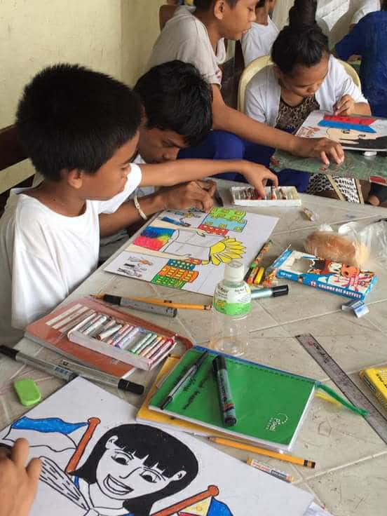
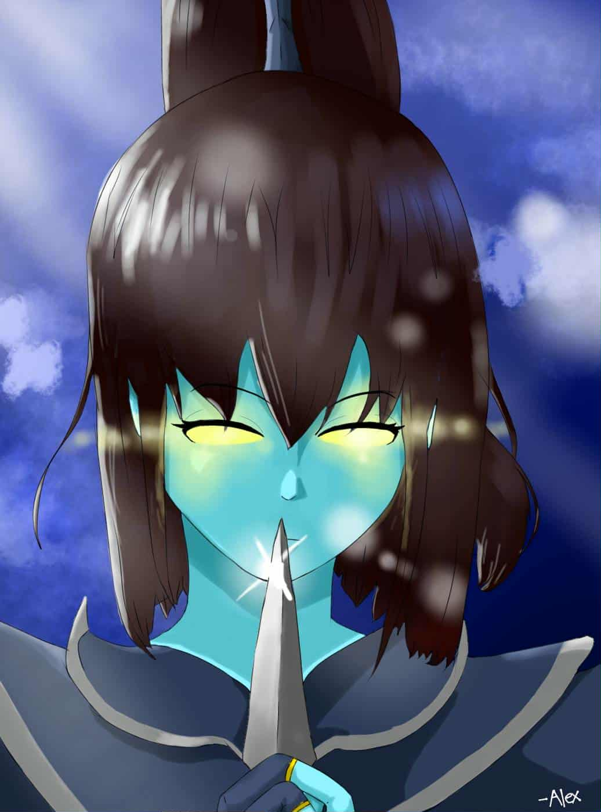
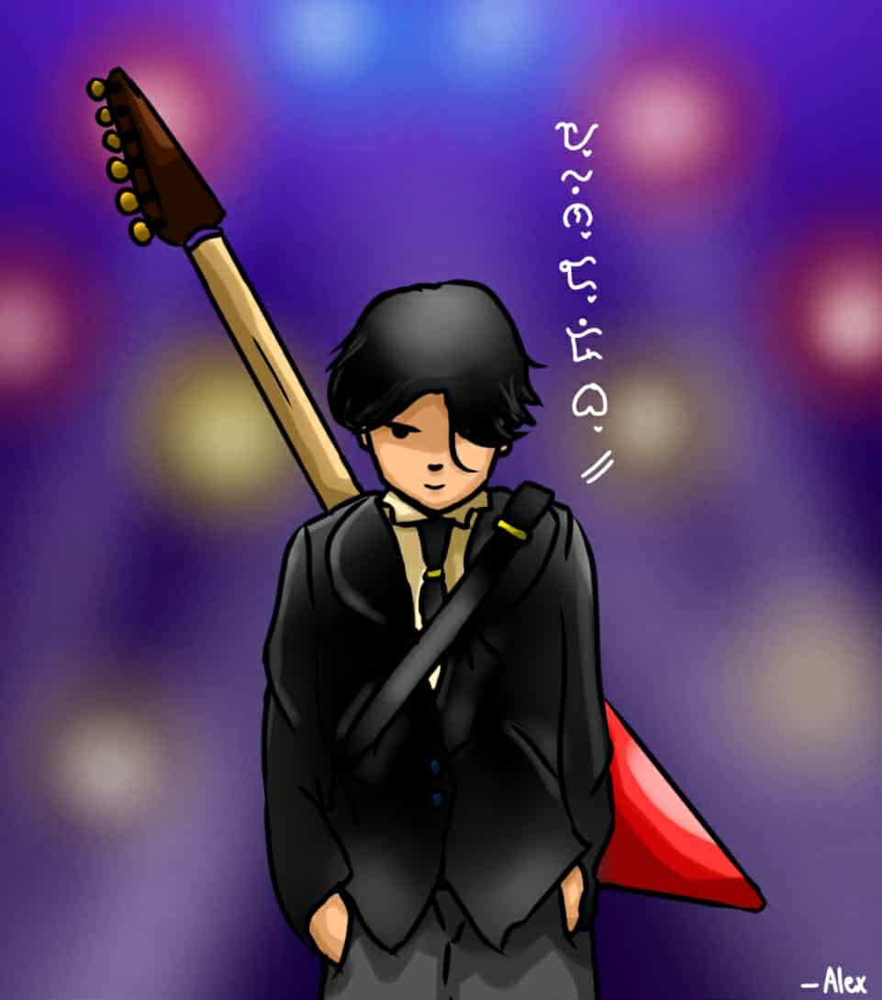
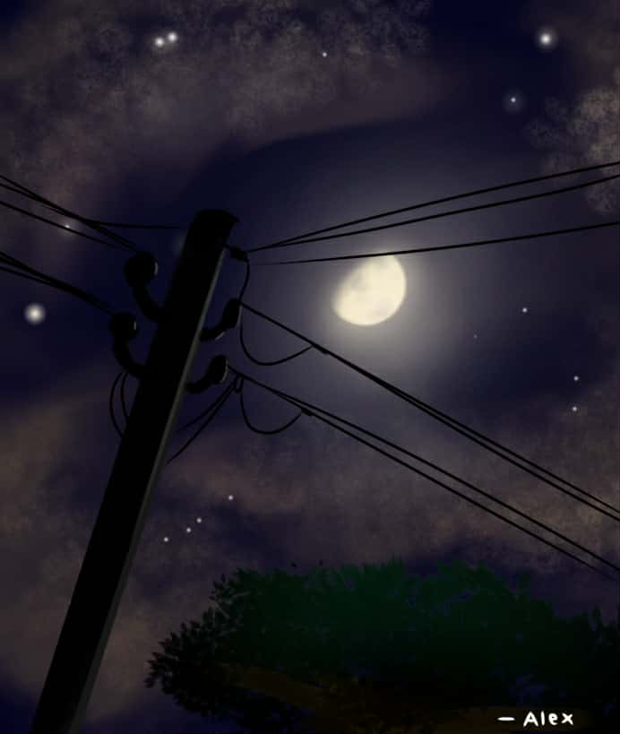
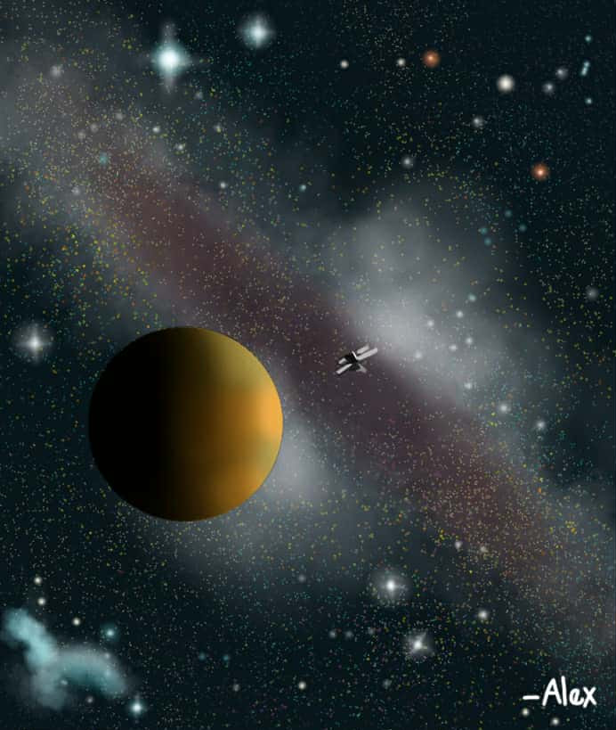
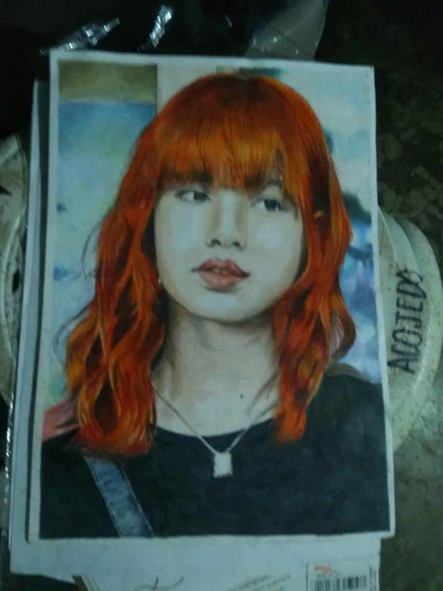
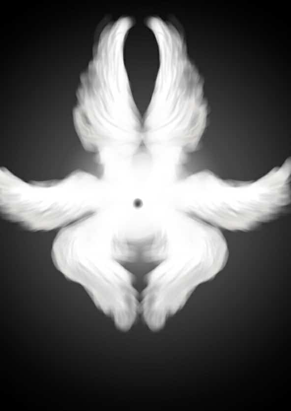

Back in 2016, when I was in Grade 7, I once again tried to take part in art exhibits. However, I couldn't make it into the bigger ones, since there were many who were more skilled and knowledgeable in design. Still, that didn't measure my worth, because I was slowly learning and gradually improving in drawing. As the years passed and the pandemic came to an end, I suddenly lost the passion for the art I had been so used to. But maybe that's alright. I believe I can recover quickly, because art has already become a part of me—it feels like it's built-in.

This is a digital art, I made it as an icon from a Dota 2 character Phantom Assassin

Also a digital art and I made it as an Icon from my Smurf friend from IT Department of University of Cebu

Also a diigital art that is dedicated from a song I just forgot it but it was popular last yr like 2022 0r 2023 it simply just mention the word "MOON"

Its also a digital art which is simply dedicated in astronomical places

A realistic portrait that I made last 2022, that was just a practice

A digital art simply dedicated from a high ranked Angel Seraphim